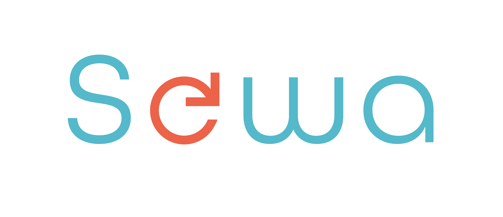

+++
title = "Sewa a.s. - Asistent/ka"
slug = "77"
+++
<div class="container">
    <div class="row justify-content-center py-5">
        <div class="col py-5">
            <h1 class="text-center">Pracovná ponuka už nie je aktuálna</h1>
            <p class="text-center"><a href="..">Aktuálne flexibilné pracovné ponuky</a></p>
        </div>
    </div>
</div>
<!--
<div class="container mb-5">
    <div class="row justify-content-around">
        <div class="col-6 col-md-2 mt-3">
        </div>
        <div class="col-md-8">
            <h1>SEWA a.s.</h1>
          <h2>Asistent/ka</h2>

            <p>
                <strong>Miesto: </strong>Sliačska 1E, 831 02 Bratislava – Nové Mesto
<br/>
                <strong>Forma: </strong>TPP (polovičný, skrátený úväzok)<br/>
                <strong>Flexi faktor: </strong>  Ideálny model pre nás je, ak by kandidát vedel prísť k nám do
              officu 3 x týždenne na vopred dohodnutý počet hodín, keďže niektoré úlohy (pošta, balenie materiálov) 
              potrebujú byť vybavené v konkrétny čas. 
              Celkový rozvrh pracovného času a úväzok však vieme dohodnúť s kandidátom individuálne. 
                                                <br/>
                <strong>Plat: </strong>5,50 eur/hod v prípade dohody, 600 eur brutto/mesačne pri polovičnom pracovnom úväzku. V prípade, že by 
              kandidátka postupne prebrala odbornejšie pracovné úlohy, mzdu prehodnotíme podľa náročnosti vykonávanej práce.
<br/>
                <strong>Očakávaný nástup: </strong>Podľa dohody, ideálne čo najskôr<br/>
                <strong>Dátum pridania ponuky: </strong>2.6.2023<br/>
            </p>
            <h2>O firme </h2>
            <p>Sme autorizovaná organizácia výrobcov pre elektroodpad, batérie a obaly a neobalové výrobky. 
              Učíme deti aj dospelých správne nakladať s odpadom. Pomáhame firmám a obciam zbavovať sa starých 
              elektrozariadení a batérií. 
              Plníme legislatívne normy za dovozcov a výrobcov elektrozariadení, batérií a obalov. Viac info 
              nájdete na <a href="https://sewa.sk" target="_blank">www.sewa.sk</a>
      </p>
     
            <h2>Náplň práce</h2>
                  <ul>
         <li>Zapisovanie prijatých faktúr a scanovanie dokumentov,
         <li>Spracovanie podkladov k projektom – balenie materiálov pre zapojené organizácie 
           (certifikáty, nádoby a informačné materiály), komunikácia s kuriérom,
         <li>Odvoz firemnej pošty, 
         <li>Drobné nákupy a iné podľa pokynov nadriadeného.
    
      </ul>
      </p>
      
      <h2>Požiadavky</h2>
      <ul><li>Znalosť Microsoft Office na mierne pokročilej úrovni
          <li>Vodičský preukaz B, aktívny vodič
          <li>Znalosť anglického jazyka výhodou
          
                               </ul>
      
             <h2>Doplňujúce info</h2>     
<p>Malý stabilný kolektív. <br>
  Účasť na firemných aktivitách a vzdelávacích podujatiach.
      </p>
            <h2>Ďalší postup</h2>
<p>V prípade záujmu o prácu v našej spoločnosti nás kontaktujte na <a href = "mailto: bednarova@sewa.sk">bednarova@sewa.sk</a> </p>

        </div>
        <div class="col-md-2"></div>
    </div>
    <div class="row">
        <div class="col offset-md-2 mt-5">{{< back >}}</div>
    </div>
</div>
-->
